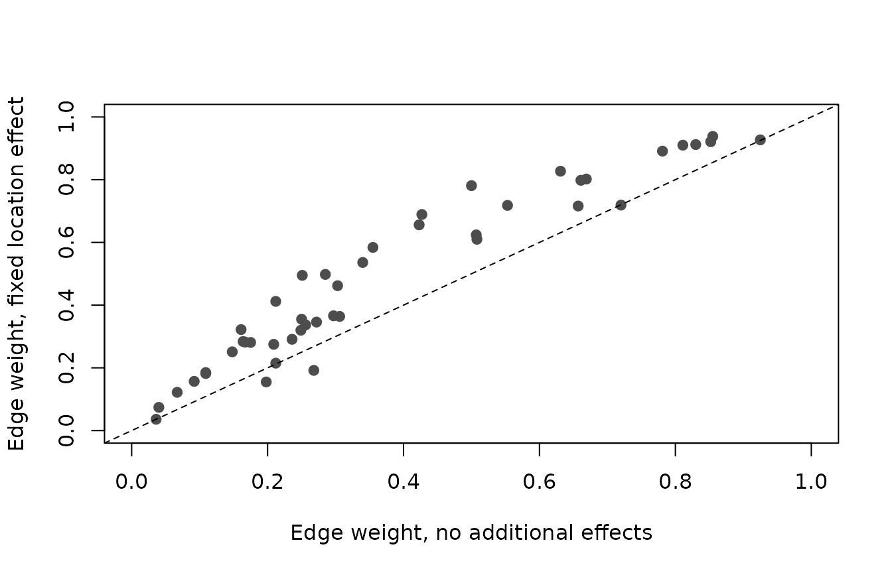
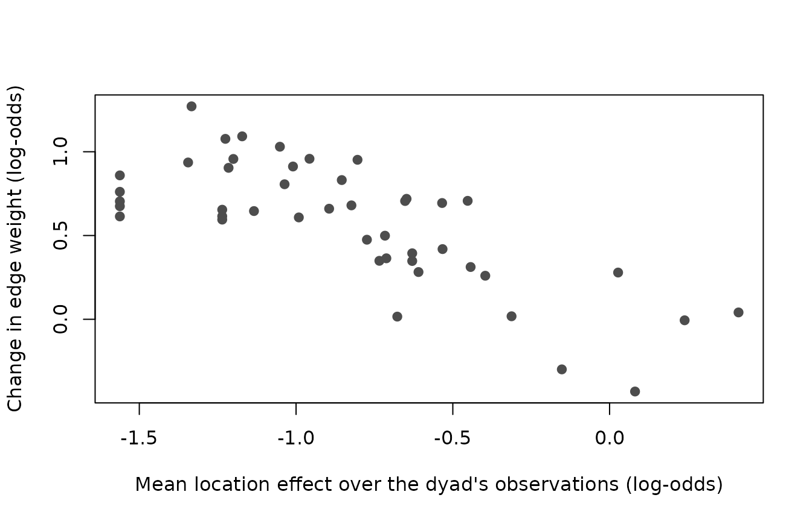

The probability of seeing a social event often depends on the
conditions of observation as well as on the relationship between the
individuals. For example, pairs may be seen together more often at a
feeding site than elsewhere, or one observer may record more
interactions than another. Binary and count edge models can include such
factors as fixed or random effects, so that the edge weights are
estimated after accounting for them. This article describes the terms
that can be added to the edge model formula, how to inspect the fitted
effects, and how the effects change the interpretation of the edge
weights. A basic analysis is described in
vignette("getting_started").
Conjugate models (model_type = "binary_conjugate" or
"count_conjugate"), which calculate the results exactly
without sampling, only support dyad() terms. The models in
this article are therefore fitted with
model_type = "binary".
The data
Additional effects are estimated from variation between observations,
so they need disaggregated data, with one row per sampling period or
observation session. simulate_bison_model() simulates
binary data in which the probability that a pair is seen together
depends on the dyad, on the age difference between the two individuals,
and on the location (one of five) where the observation was made:
sim_data <- simulate_bison_model("binary", aggregated = FALSE, max_obs = 15)
df <- sim_data$df_sim
head(df)
#> node_1_id node_2_id event effort age_diff age_1 age_2 location
#> 1 1 2 1 1 -1.9874477 18.1389 20.12635 5
#> 2 1 2 0 1 -1.9874477 18.1389 20.12635 4
#> 3 1 2 1 1 -1.9874477 18.1389 20.12635 4
#> 4 1 2 1 1 -1.9874477 18.1389 20.12635 4
#> 5 1 2 1 1 -1.9874477 18.1389 20.12635 2
#> 6 1 3 0 1 0.8716649 18.1389 17.26724 1
#> duration
#> 1 1
#> 2 1
#> 3 1
#> 4 1
#> 5 1
#> 6 1
table(df$location)
#>
#> 1 2 3 4 5
#> 74 69 54 68 78location is stored as an integer from 1 to 5. Integer
and numeric columns are treated as continuous predictors, with a single
parameter for the slope. Location is a category, so it is converted to a
factor first:
df$location <- factor(df$location)A model without additional effects
For comparison, a model with only edge weights is fitted first. In
the fits below, seed makes the results reproducible, and
show_messages = FALSE and
show_exceptions = FALSE hide Stan’s progress and
informational messages.
priors <- get_default_priors("binary")
fit_dyad <- bison_model(
(event | effort) ~ dyad(node_1_id, node_2_id),
data = df,
model_type = "binary",
priors = priors,
iter_sampling = 500,
seed = 1,
show_messages = FALSE,
show_exceptions = FALSE
)Fixed effects
A fixed effect is added with + followed by a column
name:
fit_fixed <- bison_model(
(event | effort) ~ dyad(node_1_id, node_2_id) + location,
data = df,
model_type = "binary",
priors = priors,
iter_sampling = 500,
seed = 1,
show_messages = FALSE,
show_exceptions = FALSE
)A factor fixed effect gets one parameter per level. There is no
reference level, unlike in lm(). A numeric column gets a
single parameter. get_effects() gives the estimates,
labelled by level (they are also shown by summary()):
get_effects(fit_fixed)
#> effect type median 5% 95%
#> 1 location = 1 fixed -1.562 -2.434 -0.778
#> 2 location = 2 fixed -1.445 -2.235 -0.620
#> 3 location = 3 fixed 1.398 0.534 2.295
#> 4 location = 4 fixed -0.639 -1.438 0.128
#> 5 location = 5 fixed -0.909 -1.666 -0.122The parameters are on the link scale, the scale on which effects are
added together (log-odds for binary models). Each has the
fixed prior (the distribution assumed for it before seeing
the data), normal(0, 2.5) by default. The table gives the
median of each parameter’s posterior distribution, which describes its
plausible values given the data and the priors, and a 90% credible
interval, the range that contains the parameter with 90% probability.
Here location 3 has a positive effect (posterior median 1.39), and the
other four locations have negative medians, between -1.57 and -0.65.
These values are not relative to a reference location. Their overall
level is shared with the edge weights, as described below.
Intercepts
Edge models have no global intercept by default. 1 in
the formula adds one, and 0 excludes it explicitly. In a
model with a dyad() term an intercept is usually not
needed, because the edge weights already include the overall rate of
events. An intercept is used in models without a dyad()
term, such as the null model (event | effort) ~ 1 in
vignette("getting_started"), in which every dyad has the
same rate.
Random effects
A random intercept is added with (1 | g):
fit_random <- bison_model(
(event | effort) ~ dyad(node_1_id, node_2_id) + (1 | location),
data = df,
model_type = "binary",
priors = priors,
iter_sampling = 500,
seed = 1,
show_messages = FALSE,
show_exceptions = FALSE
)As with fixed effects, there is one parameter for each level. The
difference is that the levels are drawn from a common normal
distribution with mean 0 and a standard deviation that is estimated from
the data, with the random_std prior. Because the levels are
centred on 0, the overall rate of events is described by the edge
weights, and the random effects describe how each location differs from
it.
In a model without a dyad() term or factor fixed effect,
an intercept is needed to set the overall rate, for example
(event | effort) ~ 1 + (1 | location).
bison_model() gives a warning if it is missing.
get_effects(fit_random)
#> effect type median 5% 95%
#> 1 location = 1 random -1.226 -1.987 -0.490
#> 2 location = 2 random -1.106 -1.898 -0.406
#> 3 location = 3 random 1.396 0.710 2.179
#> 4 location = 4 random -0.394 -1.150 0.273
#> 5 location = 5 random -0.621 -1.407 0.018
#> 6 sd(location) random sd 1.110 0.655 1.915The location effects are similar to those of the fixed effect model:
their medians range from -1.24 to 1.42, compared with -1.57 to 1.39. The
median of the standard deviation between locations,
sd(location), is 1.12. The prior centres the random effects
on 0, but with only five levels their estimates need not average 0. Here
the medians average about -0.4.
Because the levels share a common distribution, levels with few
observations are pulled towards the mean of the other levels. Random
effects are therefore suited to factors with many levels, or with some
levels that are rarely observed, such as observers or observation days.
With few levels, as here, the standard deviation between levels
(random_group_sigma) is estimated from only a few values
and depends more on its prior. Choose between a fixed and a random
effect based on the study design, not on which gives the preferred
result.
A model can contain several fixed and random effects, for example
+ location + (1 | observer). Each random effect term has
its own standard deviation (random_group_sigma).
How effects change the edge weights
With additional effects, the expected value for an observation is the
sum of the edge weight and the effects, on the link scale. For a binary
model, the probability that dyad ij is seen together in a
sampling period at location k is
plogis(edge_ij + beta_k). The edge weight is therefore the
dyad’s tendency to be seen together after accounting for location,
rather than the overall proportion of sampling periods in which the pair
were seen together.
The edge weights with and without the location effect can be compared:
edges_dyad <- get_edgelist(fit_dyad)
edges_fixed <- get_edgelist(fit_fixed)
edges_random <- get_edgelist(fit_random)
comparison <- data.frame(
node_1 = edges_dyad$node_1,
node_2 = edges_dyad$node_2,
no_effects = edges_dyad$median,
fixed_location = edges_fixed$median,
random_location = edges_random$median
)
head(comparison, 10)
#> node_1 node_2 no_effects fixed_location random_location
#> 1 1 2 0.781 0.891 0.864
#> 2 1 3 0.355 0.584 0.535
#> 3 1 4 0.631 0.827 0.786
#> 4 1 5 0.040 0.074 0.073
#> 5 1 6 0.285 0.498 0.434
#> 6 1 7 0.830 0.912 0.893
#> 7 1 8 0.067 0.122 0.104
#> 8 1 9 0.109 0.185 0.161
#> 9 1 10 0.209 0.275 0.242
#> 10 2 3 0.855 0.938 0.921
plot(comparison$no_effects, comparison$fixed_location,
xlim = c(0, 1), ylim = c(0, 1), pch = 19, col = "grey30",
xlab = "Edge weight, no additional effects",
ylab = "Edge weight, fixed location effect")
abline(a = 0, b = 1, lty = 2)
Almost all edge weights are higher in the models with a location effect. The random effect model gives edge weights between the other two, slightly lower than the fixed effect model, because its location effects are centred on 0. The order of the dyads is mostly, but not entirely, the same in the two models.
Two separate things change when the location effect is added.
The first is the relative position of dyads. A dyad that was mostly observed at locations with a high rate of events would otherwise appear to have a strong edge, partly because of where it was observed. The plot below compares the change in each edge weight (on the link scale) with the mean fitted location effect across that dyad’s observations:
fixed_effects <- get_effects(fit_fixed)
beta_location <- fixed_effects$median[fixed_effects$type == "fixed"]
dyad_ids <- fit_fixed$model_info$row_dyad_ids
mean_location_effect <- tapply(beta_location[as.integer(df$location)], dyad_ids, mean)
edges_dyad_logit <- get_edgelist(fit_dyad, transform = FALSE)
edges_fixed_logit <- get_edgelist(fit_fixed, transform = FALSE)
change <- edges_fixed_logit$median - edges_dyad_logit$median
plot(mean_location_effect, change, pch = 19, col = "grey30",
xlab = "Mean location effect over the dyad's observations (log-odds)",
ylab = "Change in edge weight (log-odds)")
Dyads observed mostly at locations with low fitted effects have the largest increases. Dyads observed mostly at location 3, which has the highest fitted effect, change little or have lower edge weights. The relationship is not exact, because the change also depends on how many observations each dyad has and on the prior.
The second is the overall level of the edge weights. In a model with
a dyad() term and a factor fixed effect, adding the same
constant to every edge weight and subtracting it from every location
parameter gives the same predictions. The data cannot separate the two,
so the overall level of the edge weights is determined partly by the
priors. This can be seen in the posterior correlation between the mean
edge weight and the mean location effect:
draws <- fit_fixed$fit$draws(c("edge_weight", "beta_fixed"), format = "matrix")
mean_edge <- rowMeans(draws[, grep("^edge_weight", colnames(draws))])
mean_location <- rowMeans(draws[, grep("^beta_fixed", colnames(draws))])
cor(mean_edge, mean_location)
#> [1] -0.8502353The correlation is strongly negative: in posterior draws (samples from the posterior distribution) in which the location effects are higher, the edge weights are lower. The general increase in the edge weights in the first plot is partly a shift of this kind. The location effects are mostly negative, and the edge weights are higher to compensate.
The same applies to an intercept added with 1. Random
effects are less affected because they are centred on 0, but with few
levels their estimated values need not average 0 (as in the example
above), so some trade-off remains. As a result, interpret the absolute
values of the edge weights in models with factor fixed effects or an
intercept with care. The reported probability
plogis(edge_ij) corresponds to an observation with all
effects equal to 0, which may not correspond to any real observation.
Differences between dyads, and analyses that depend on them, are better
determined by the data.
Dyad-level predictors
A predictor that has the same value in every observation of a dyad,
such as the age difference between the two individuals, cannot be
separated from the edge weight of that dyad, because each dyad already
has its own parameter. If it were included in the edge model, its
parameter could trade off against the edge weights, and only the
edge prior would separate the two. Instead, estimate the
effect of dyad-level predictors on edge weights in a downstream
regression (a second model fitted to the estimated edge weights) with
bison_brm(), as described in
vignette("getting_started") and
vignette("bison_brms"). Fixed and random effects in the
edge model are for factors that vary between observations of the same
dyad.
Partial pooling
By default each edge weight has an independent prior, the
edge prior. With partial_pooling = TRUE, the
edge weights are instead drawn from a normal distribution whose standard
deviation, edge_sigma, is estimated from the data. The mean
of this distribution is the mean of the edge prior, and the
second value of the edge prior becomes the scale of a
half-normal prior on edge_sigma. Edges with few
observations are then pulled towards the mean by an amount that depends
on how much edge weights vary in the rest of the network.
fit_pooled <- bison_model(
(event | effort) ~ dyad(node_1_id, node_2_id) + location,
data = df,
model_type = "binary",
priors = priors,
partial_pooling = TRUE,
iter_sampling = 500,
seed = 1,
show_messages = FALSE,
show_exceptions = FALSE
)
get_effects(fit_pooled)
#> effect type median 5% 95%
#> 1 location = 1 fixed -1.385 -1.985 -0.786
#> 2 location = 2 fixed -1.283 -1.913 -0.707
#> 3 location = 3 fixed 1.163 0.539 1.854
#> 4 location = 4 fixed -0.579 -1.180 0.006
#> 5 location = 5 fixed -0.764 -1.332 -0.242
#> 6 sd(edge weights) pooling sd 1.169 0.812 1.616The median of the standard deviation of the edge weights,
sd(edge weights), is 1.17, with a 90% credible interval
from 0.82 to 1.64, so the edge weights are estimated to vary less than
the default edge prior (standard deviation 2.5) allows. The
location effects are similar to those of the model without pooling, with
narrower intervals.
The effect of partial pooling on individual edges can be seen by comparing the credible intervals of the two models:
edges_pooled <- get_edgelist(fit_pooled)
width_fixed <- edges_fixed[, 5] - edges_fixed[, 4]
width_pooled <- edges_pooled[, 5] - edges_pooled[, 4]
summary(width_fixed)
#> Min. 1st Qu. Median Mean 3rd Qu. Max.
#> 0.1640 0.4650 0.5650 0.5665 0.7190 0.8850
summary(width_pooled)
#> Min. 1st Qu. Median Mean 3rd Qu. Max.
#> 0.2240 0.4330 0.4870 0.5046 0.6010 0.7190With partial pooling the median width of the 90% intervals is smaller (0.49 rather than 0.58) and the widest interval is narrower (0.73 rather than 0.89). The narrowest interval is wider (0.22 rather than 0.16).
Partial pooling assumes that the edge weights in the network come
from a single normal distribution on the link scale. This is not
appropriate for every network, for example one with a small number of
strong relationships among many weak ones.
vignette("mixture_models") describes how to look for
different types of relationship.
Summary
- Fixed effects (
+ x) and random effects (+ (1 | g)) account for factors that vary between observations of the same dyad. They need disaggregated data and binary or count models. - Factor fixed effects get one parameter per level. Integer columns are treated as numeric unless they are converted to factors.
-
get_effects()gives the estimates of the fixed effects, random effects and their standard deviations, andsummary()shows them after the edge weights. - With additional effects, edge weights describe each dyad’s tendency to interact after accounting for those effects. Their overall level is shared with the effects and depends partly on the priors.
- Dyad-level predictors belong in downstream regressions with
bison_brm(), not in the edge model. -
partial_pooling = TRUEestimates the spread of edge weights from the data, around a mean fixed by theedgeprior.